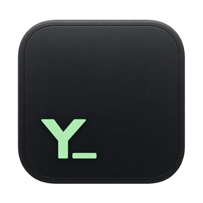

Real shells, real PTYs
Powered by xterm.js and native pseudoterminals. zsh and bash start as login shells, so launching from Finder picks up your full PATH.

Y-TermY-Term is a quiet, native-feeling terminal for Apple Silicon. Real shells, tabs that remember where you were, and a built-in Git review panel. Nothing more than you need.
Free and open source · MIT license · macOS on Apple Silicon · signed and notarized
Powered by xterm.js and native pseudoterminals. zsh and bash start as login shells, so launching from Finder picks up your full PATH.
Sessions live in a resizable sidebar. New tabs open in the active shell's current directory, and closing a tab cleanly terminates its child processes.
Press ⇧⌘G to review the repository you're in. Staged and unstaged diffs appear side by side and refresh automatically. The panel is read-only, so staging and committing still happen in the terminal.
⌘-click URLs to open them in your browser, and local file paths (relative, quoted, or file: links) in their default macOS app.
Shift+Enter inserts newlines in agents that support CSI u, pasted images reach tools that read the clipboard, and running agents are marked in the sidebar.
OSC 9 and OSC 777 notifications from long-running commands highlight their tab, so you notice when a background job needs you.
Drop files or folders onto a terminal to insert safely quoted absolute paths. Nothing runs until you press Enter.
Y-Term checks GitHub for new stable releases and installs signed updates in one click, after confirming with you first.
A calm palette in both themes. Font, theme, and scrollback apply immediately, and the app never saves terminal output or credentials.
| ⌘T | New tab in the current directory |
| ⌘W | Close tab and end its shell |
| ⌃Tab / ⇧⌘] | Next tab |
| ⌃⇧Tab / ⇧⌘[ | Previous tab |
| ⌘B | Show or hide the sidebar |
| ⇧⌘G | Toggle the Git changes panel |
| ⌘F | Search the terminal |
| ⌘+ / ⌘− / ⌘0 | Bigger, smaller, and reset font size |
| ⌘K | Clear the display |
| ⌘, | Settings |
Requires macOS on Apple Silicon. Intel Macs aren't supported yet.
git clone https://github.com/younghoandrewchaa/y-term.git cd y-term npm install npm start
Requires Node.js 24.13 or later and the Xcode Command Line Tools.